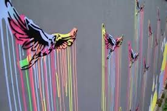
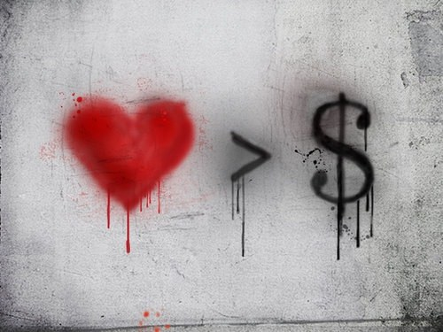
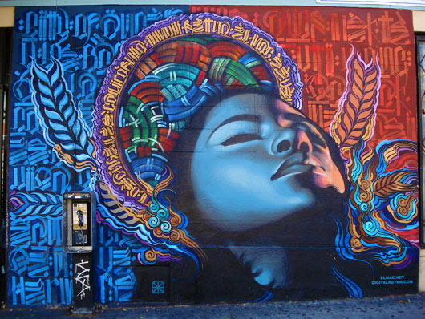

Graffiti
Graffito (din italiană graffito, derivat din sgraffiare = a zâria), la plural graffiti este un termen din arheologie care desemnează o inscripţie sau un desen executat fie cu pigmenţi de culoare roşie, fie prin zgâriere, descoperite pe monumentele antice.
În prezent, graffiti este un termen general referitor la inscripţii caligrafiate sau imagini pictate sau gravate pe pereţi sau alte suprafeţe publice sau private, care nu sunt destinate acestui scop. Când este făcut fără consimţământul proprietarului, constituie vandalism (care este ilegal). Graffiti a existat încă din antichitate, în perioada Greciei Antice şi a Imperiului Roman. Cu cât locul este mai privat, mai ilegal, cu atât este o performanţă mai mare să îl facă. Din această cauză o să găsim o grămadă de graffiti-uri în staţiile de metrou/autobuz. Graffiti-ul nu e doar un simplu text ci este un desen care trebuie să fie cât mai complicat şi mai diferit de altele. Fiecare graffitist/grup de graffitişti are tagg-ul său.(tagg-ul este un desen propriu pe care numai el/ei îl fac). Există şi grupuri anti-graffiti cum ar fi "Vandal Squad", care a făcut un program pe PC numit Graffiti Studio în care faci graffiti pe orice fără a mai "mâzgăli" pereţii adevăraţi. Mai nou s-au făcut locuri speciale pentru graffiti dar aproape nimeni nu vine pentru că nu e ilegal.
|  |  |  |
Graffiti poate exprima , de asemenea, mesaje sociale şi politice care stau la baza unui mod de exprimare artistică ce se bazează pe stiluri diferite de graffiti . În cultura hip-hop , graffitiul a evoluat alături de muzica hip hop. Fără legătură la hip-hop si graffiti , bandele de gangster foloseau propria lor formă de graffiti pentru a marca teritoriul sau pentru a servi ca un indicator de activităţi ale bandei .
Controversele care înconjoară graffiti continuă să creeze dezacord între oficialii oraşelor şi artişti ce doresc să li se aprecieze munca în locuri publice . Există mai multe tipuri şi stiluri de graffiti diferite şi aceasta este o formă de artă în curs de dezvoltare, a cărui valoare este extrem de contestată şi batjocorită de către mai multe autorităţi în timp ce , multă lume apreciază această nouă artă a lumii.